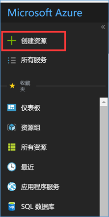
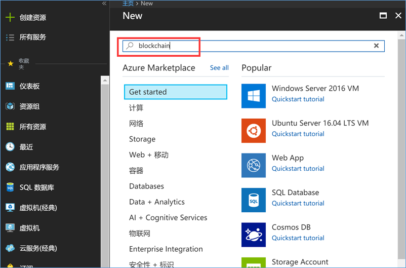
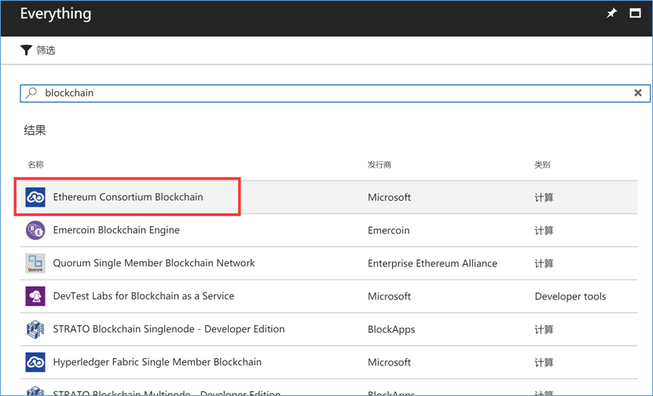
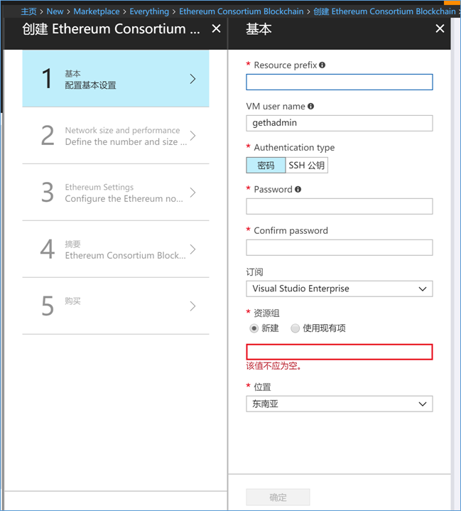
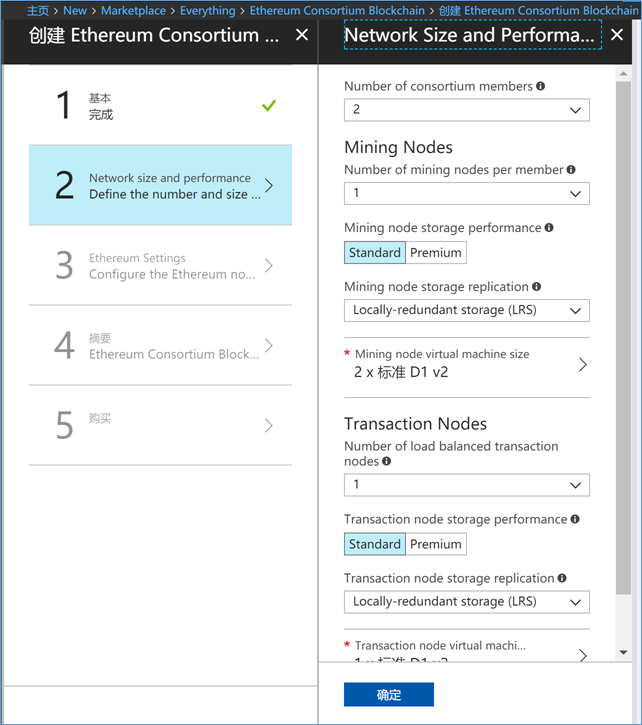
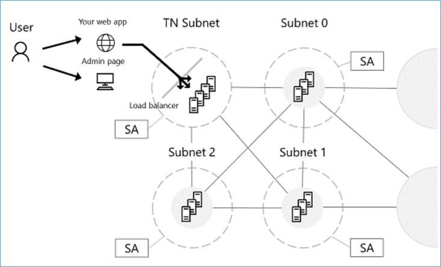
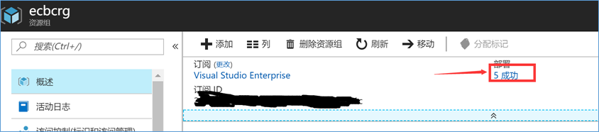
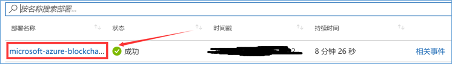
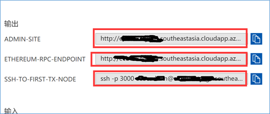
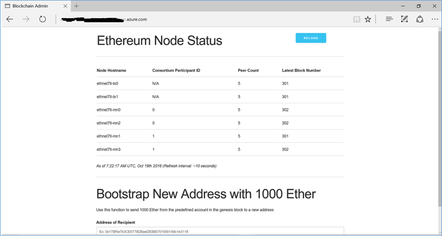

摘要 : 比特币现在越来越火，区块链的研究也成为了一个热门话题，起早尝个鲜，我也来撸一把区块链技术。调查了一下区块链的技术有很多，被称为下一代加密货币与去中心化应用平台的Ethereum进入了视野。 要学习Ethereum上面的开发，搭建一个自己的私有Ethereum Consortium Network是一个不错的选择。本文主要是介绍如何在Azure 平台上创建一个私有的Ethereum Consortium Network.
关于区块链技术
比特币最近越来越火，成为了新闻话题。他背后所运用的技术就是区块链。然而比特币对于区块链的应用更趋向于虚拟的电子货币。区块链所能做到的与非如此。区块链（英语：blockchain 或 block chain）[1]是用分布式数据库识别、传播和记载信息的智能化对等网络, 也称为价值互联网。中本聪在2008年，于《比特币白皮书》中提出”区块链”概念，并在2009年创立了比特币社会网络，开发出第一个区块，即”创世区块”。区块链技术基于去中心化的对等网络，用开源软件把密码学原理、时序数据和共识机制相结合，来保障分布式数据库中各节点的连贯和持续，使信息能即时验证、可追溯、但难以篡改和无法屏蔽，从而创造了一套隐私、高效、安全的共享价值体系。
目前来讲，非常多的应用是将数据存储在数据库上。相对的，去中心话的应用则是与Ethereum区块链进行交互。一个私有的Ethereum网络包含了许多peer-to-peer的去中心化的节点。又这些节点来存储和维护各种各样的数据存储，例如分布式账本。并且这些节点也会负责这些分布式账本的运算，以保持各个节点数据的一致性。Smart Contract这种机制则允许这些节点进行更加复杂的运算。Smart Contract大概可以理解为等同于SQL Stored Procedures.
节点分为两种类型，Mining Node 以及 Transaction Node（non-mining nodes）。Transaction Node用于存储和维护分布式票据。同时也可以在网络中发布或者查找Transaction. 应用使用Ethereum的web3 JavaScript Object跟各个节点进行交互。从而可以在应用中操作或者存储这些Transactions. 一般来说，Wallet可以认为是一个Transaction Node. Mining Node则是将这些Transaction commit 到分布式账本中，并进行一致性过程的节点。
GETTING STARTED
如果要在AZURE上搭建一个Ethereum Consortium Network， 首先必须要创建一个Azure账号。可以看这里 https://azure.microsoft.com/en-us/free/
国内的用户创建Azure账号可以看这里 https://account.windowsazure.cn/Home/Index 不过比较尴尬的是，国内的Azure比较滞后，经常会出现Global Azure上有的feature，在China Azure上没有的情况。建议是使用Global Azure的账号来做接下来的步骤。
- 进入Azure Portal后，进入仪表盘，点右上角的创建资源。

这里有很多Azure上面已经预先创建好的模板。在模板的创建上微软还是很贴心的。 - 在搜索栏中输入blockchain, 回车以后看到很多已经建立好Block Chain模板。选择Ethereum Consortium Blockchain. 当然你也可以尝试其他的模板。
 - 选中这个模板，然后点击创建，进入到配置环节。
 - 首先要进行基本配置。
- Resource Prefix 是对这个资源的命名。
- 资源组 则是将这个模板中所用到的所有资源放在一起方便管理。
- 位置是选择这个模板所搭建的Data Center所处在的位置。在全球，Azure有非常多的Data Center。可以选择一个网络稳定，接入速度快的Data Center.

- 第二步是对服务器的性能进行设置。选择高性能的服务器会有更高的性能，但是也意味着每个月需要更多的付费。
 - 第三步是Ethereum的基础配置。
- 第四部检查摘要。如果没有问题的话就可以进入到下一步购买。
- 点击购买之后，Azure会自动发布设定好的资源。只需要几分钟，整个私有网络就搭好了。
建立好了之后就可以在仪表盘中看到刚刚建立好的资源组。里面包含了整套solution。
Ethereum consortium network在Azure上的架构
虽然Consortium Network没有单一的规范体系结构。但改模板提供了一个实例体系结构，用于快速入门。这个架构是有一组共享Transaction Nodes组成，应用程序可以通过这些节点进行交互以提交事务，并且每个联合会员都有一组Mining Nodes来记录事务。所有的节点都在同一个虚拟网络中，这样每个Consortium Network的成员的子网都很可以很容易的通过应用网关进入到独立的虚拟网络中。

MINING NODE
每一个Consortium Network都存在着一个独立、相同的子网，其中会包含一个或者多个采矿点，关联到一个存储账号上。子网中的第一个默认VM被被指为引导节点，用于支持网络中节点的动态发现（dynamic discoverability）。Mining Node与其他Mining Node进行通信，就底层分布式账本的状态达成共识。我们的应用程序并不需要了解这些细节。我们只需要专注于Private Network。因此这些节点与Public Network的入站流量隔离，增加了二级保护。允许出站流量，但不允许出口端口。虽然每个成员的虚拟机在一个单独的子网中，但各个节点仍然通过以太坊的发现协议相互连接和通信。
所有节点都有最新的Go Ethereum（Geth）客户端软件，并被配置为Mining Node。所有节点使用以太坊帐户密码保护的同一个以太坊帐户（以太坊地址和密钥对）。从提供的以太坊密码生成的公共私钥对存储在每个Geth节点上。由采矿节点来挖矿，并对其他需要消费这个计算能力的节点来收取的费用。
TRANSACTION NODE
所有的Consortium Network成员都共享这一组负载均衡的Transaction Node。这些节点都可以从虚拟网络外部进行访问，以便应用程序 可以使用这些节点提交交易或执行区块链网络内的智能合约（Smart Contract）。所有节点都拥有最新的Go Ethereum（Geth）客户端软件，并配置为维护分布式账本的完整副本。 这些节点使用相同的Ethereum帐户，由以Ethereum帐户密码提供保护。
Transaction Node与Mining Node的是完全分开，以确保这两个操作不会争夺相同的资源。 并且的Transaction Node进行了负载平衡，以保持高可用性。
ADMIN 页面
一旦部署成功完成并且所有资源都已配置完毕，您可以转至管理员页面以获取区块链网络的简单视图。
管理站点URL是负载均衡器的DNS名称; 它也是模板部署的第一个输出。 要查找模板输出，请选择刚部署的资源组。 选择Overview选项卡，然后选择Last Deployment。



您可以通过查看以Ethereum节点状态部分来获得刚刚部署的拓扑的总体情况。 本部分包括所有Node的主机名和Node所属的参与者。 它还显示与对等计数的节点连接。 对等计数是网络中Mining Node数量的最小值，而在Public Ethereum网络中，二十五个配置的最大对等计数是二十五个。 不过，对等计数不会限制可以在网络中部署的节点的数量。 偶尔，你会看到对等计数波动，对某些节点来说会更少。 这并不总是一个表明节点不健康的标志，因为分类帐中的分支可能会导致对等计数的轻微变化。 最后，您可以检查网络中每个节点所看到的最新块，以确定系统中的分叉或滞后。

Sonic Guo